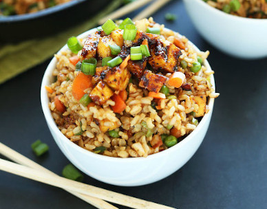

Tofu Fried Rice

Description
Easy, 10-ingredient vegan fried rice that’s loaded with
vegetables, crispy baked tofu, and tons of flavor! A
healthy, satisfying plant-based side dish or entrée.
Ingredients
Rice + Vegetables
- 1 cup extra-firm tofu
- 1 cup long- or short-grain brown rice
- 4 cloves garlic (minced)
- 1 cup chopped green onion
- 1/2 cup peas
- 1/2 cup carrots (finely diced)
Sauce
- 3 Tbsp tamari or soy sauce
- 1 Tbsp peanut butter
- 2-3 Tbsp organic brown sugar, muscovado sugar, or maple syrup
- 1 clove garlic (minced)
- 1-2 tsp chili garlic sauce
- 1 tsp toasted sesame oil